Esta funcionalidad permite que el estudiante gestione la información relacionada con su experiencia profesional. Dispone de las opciones: Agregar, Modificar y Eliminar.
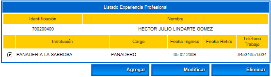
Opción Agregar: Esta funcionalidad permite al estudiante gestionar la información de su experiencia profesional la cual incluye: nombre de la institución, cargo, área de desempeño, otra área, funciones desempeñadas, salario recibido medido en SMLV, fecha de ingreso y / o retiro, país, departamento, ciudad, dirección, teléfono, nombre y cargo de su jefe inmediato. Una vez ha diligenciado estos datos deberá dar clic sobre la opción Registrar. El sistema solicita la confirmación del proceso, si la respuesta es afirmativa se emitirá un mensaje indicando el éxito del mismo.
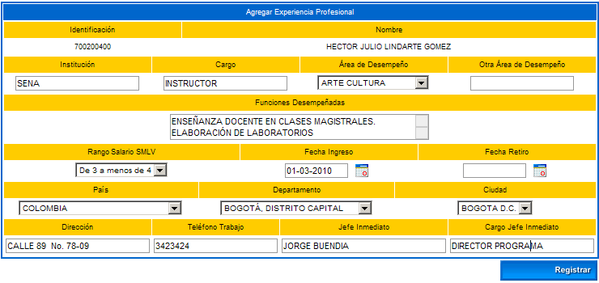
Opción Modificar: Esta funcionalidad permite al estudiante cambiar la información de su experiencia profesional la cual incluye: nombre de la institución, cargo, área de desempeño, otra área, funciones desempeñadas, salario recibido medido en SMLV, fecha de ingreso y / o retiro, país, departamento, ciudad, dirección, teléfono, nombre y cargo de su jefe inmediato. Una vez ha diligenciado estos datos deberá dar clic sobre la opción Registrar. El sistema solicita la confirmación del proceso, si la respuesta es afirmativa se emitirá un mensaje indicando el éxito del mismo.
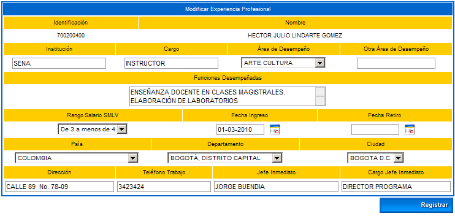
Opción Eliminar: Esta opción le permite al estudiante borrar un registro ya creado. El sistema solicita confirmación del borrado del registro, si la respuesta es afirmativa se emitirá un mensaje indicando el éxito del proceso.
Esta funcionalidad permite que el estudiante consulte la información de la experiencia docente y el tiempo de servicio que ha prestado en esta área de la educación.
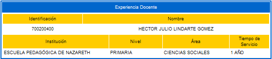
1.11 EXPERIENCIA INVESTIGACIÓN
Esta funcionalidad permite que el estudiante gestione la información relacionada con su experiencia en el proceso de investigación. Dispone de las opciones: Ver, Agregar, Modificar y Eliminar.
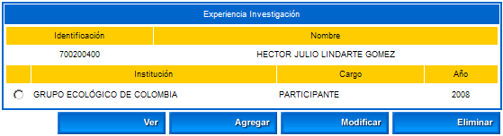
Opción Ver: Esta opción previsualiza la información básica de la participación del estudiante dentro de un proyecto de investigación.
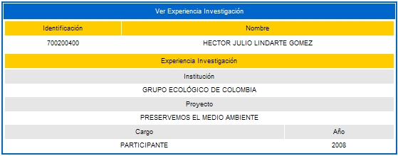
Opción Agregar: Esta funcionalidad permite al estudiante gestionar la información de su experiencia en investigación, indicando la institución, título del proyecto, cargo desempeñado y año de ejecución del mismo. Una vez ha diligenciado estos datos deberá dar clic sobre la opción Registrar. El sistema solicita la confirmación del proceso, si la respuesta es afirmativa se emitirá un mensaje indicando el éxito del mismo.
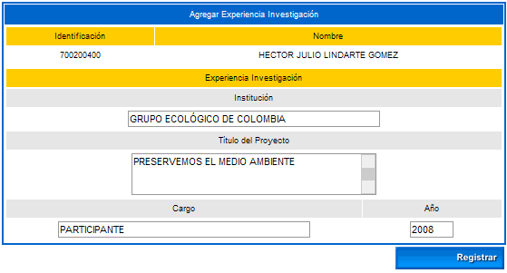
Opción Modificar: Esta funcionalidad permite al estudiante cambiar la información de su experiencia de investigación, indicando la institución, título del proyecto, cargo desempeñado y año de ejecución del mismo. Una vez ha modificado estos datos deberá dar clic sobre la opción Registrar. El sistema solicita la confirmación del proceso, si la respuesta es afirmativa se emitirá un mensaje indicando el éxito del mismo.
Opción Eliminar: Esta opción le permite al estudiante borrar un registro ya creado. El sistema solicita confirmación del borrado del registro, si la respuesta es afirmativa se emitirá un mensaje indicando el éxito del proceso.
Esta funcionalidad permite que el estudiante consulte la información de la situación actual de su lugar de vivienda.
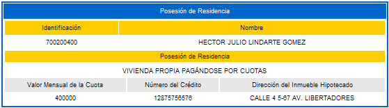
Esta funcionalidad permite que el estudiante gestione la información relacionada con las publicaciones que ha realizado. Dispone de las opciones: Agregar, Modificar y Eliminar.
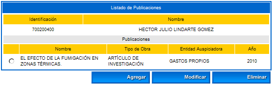
Opción Agregar: Esta funcionalidad permite al estudiante gestionar la información de las publicaciones indicando el Nombre de la institución, tipo de obra, entidad auspiciadora y año de publicación. Una vez ha diligenciado estos datos deberá dar clic sobre la opción Registrar. El sistema solicita la confirmación del proceso, si la respuesta es afirmativa se emitirá un mensaje indicando el éxito del mismo.
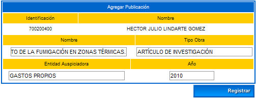
Opción Modificar: Esta funcionalidad permite al estudiante cambiar la información de las publicaciones indicando el Nombre de la institución, tipo de obra, entidad auspiciadora y año de publicación. Una vez ha diligenciado estos datos deberá dar clic sobre la opción Registrar. El sistema solicita la confirmación del proceso, si la respuesta es afirmativa se emitirá un mensaje indicando el éxito del mismo.
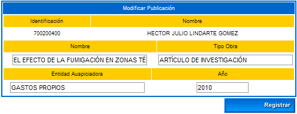
Opción Eliminar: Esta opción le permite al estudiante borrar un registro ya creado. El sistema solicita confirmación del borrado del registro, si la respuesta es afirmativa se emitirá un mensaje indicando el éxito del proceso.
Esta funcionalidad permite que el estudiante consulte la información de las referencias personales, familiares y laborales que ya han sido diligenciadas por un trabajador de la institución con el rol administrador de académico.
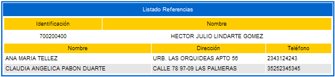
Esta funcionalidad permite que el estudiante gestione la información relacionada con los cursos que ha realizado. Dispone de las opciones: Agregar, Modificar y Eliminar.
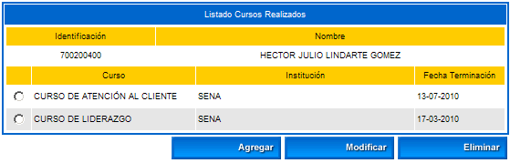
Opción Agregar: Esta funcionalidad permite al estudiante gestionar la información de cursos que ha realizado, debe ingresar el título obtenido, fecha de terminación, institución, el país y la duración. Una vez ha diligenciado estos datos deberá dar clic sobre la opción Registrar. El sistema solicita la confirmación del proceso, si la respuesta es afirmativa se emitirá un mensaje indicando el éxito del mismo.
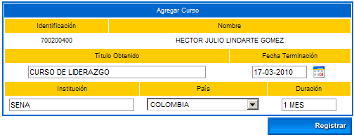
Opción Modificar: Esta funcionalidad permite al estudiante cambiar la información de cursos que ha realizado, debe ingresar el título obtenido, fecha de terminación, institución, el país y la duración. Una vez ha diligenciado estos datos deberá dar clic sobre la opción Registrar. El sistema solicita la confirmación del proceso, si la respuesta es afirmativa se emitirá un mensaje indicando el éxito del mismo.
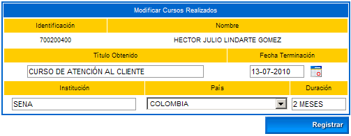
Opción Eliminar: Esta opción le permite al estudiante borrar un registro ya creado. El sistema solicita confirmación del borrado del registro, si la respuesta es afirmativa se emitirá un mensaje indicando el éxito del proceso.
Esta funcionalidad permite que el estudiante consulte la información financiera en la cual se especifica la situación familiar, costeo de los estudios, situación económica, ingresos, egresos y demás datos mostrados en el siguiente ejemplo.
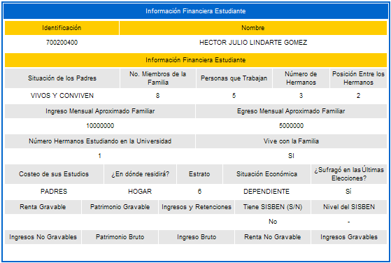
Esta funcionalidad permite que el estudiante gestione la información relacionada con las asociaciones a las cuales se ha vinculado. Dispone de las opciones: Agregar, Modificar y Eliminar.
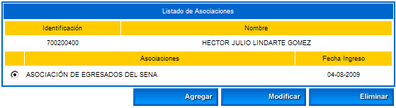
Opción Agregar: Esta funcionalidad permite al estudiante gestionar la información de las asociaciones a las cuales pertenece, debe ingresar el Nombre de la Asociación, fecha de ingreso y el objeto social. Una vez ha diligenciado estos datos deberá dar clic sobre la opción Registrar. El sistema solicita la confirmación del proceso, si la respuesta es afirmativa se emitirá un mensaje indicando el éxito del mismo.

Opción Modificar: Esta funcionalidad permite al estudiante cambiar la información de las asociaciones en las que se encuentra vinculado, puede cambiar el Nombre de la Asociación, fecha de ingreso y el objeto social. Una vez ha diligenciado estos datos deberá dar clic sobre la opción Registrar. El sistema solicita la confirmación del proceso, si la respuesta es afirmativa se emitirá un mensaje indicando el éxito del mismo.
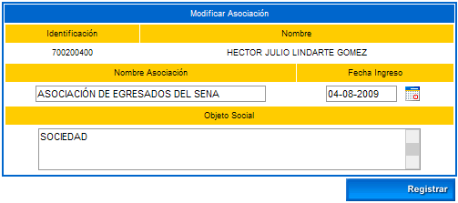
Opción Eliminar: Esta opción le permite al estudiante borrar un registro ya creado. El sistema solicita confirmación del borrado del registro, si la respuesta es afirmativa se emitirá un mensaje indicando el éxito del proceso.